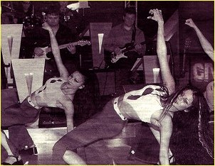
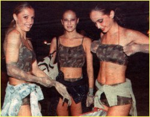
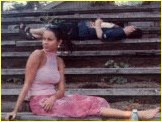

|
 Те са Балет 'Сатен'
Когато Слави Трифонов избере нещо, то става модно, интересно и
обект на публично внимание. Поредното откритие на шоумена
номер едно у нас е балет 'Сатен'. Кои са момичетата, които
гарнират с нежност и чар политическото кабаре на плевенския
виолист. Каква е историята на танцовата трупа с име на бляскава,
луксозна материя. Луксозни бижута ли са красивите девойки, или
ентусиазирани работохолички, които танцуват даже и на сън.
Те са Балет 'Сатен'
Когато Слави Трифонов избере нещо, то става модно, интересно и
обект на публично внимание. Поредното откритие на шоумена
номер едно у нас е балет 'Сатен'. Кои са момичетата, които
гарнират с нежност и чар политическото кабаре на плевенския
виолист. Каква е историята на танцовата трупа с име на бляскава,
луксозна материя. Луксозни бижута ли са красивите девойки, или
ентусиазирани работохолички, които танцуват даже и на сън.
Балет 'Сатен':
възраст от 17 до 25 г., любимо хоби - 'Не се сърди, човече'
Момичетата са в гримьорната в очакване да се
включат в репетицията на шоуто,
която се прави всеки следобед. Докато им дойде редът, те играят на 'Не се сърди,
човече'. Местят пионките със същата страст, с която танцуват.
По забравената детска игра ги запалила Ася
- най-голямата от трупатa.
Първата любов: танцът
Когато е пролет, когато сте в пролетта на живота си и когато обичате един и същ
обект от мъжки род, няма начин да не се засечете. Любимият е танцът. Влюбените -
осем красиви момичета. Събират се заедно преди три години през май, за да се отдадат
докрай на голямата си любов. В началото има много ентусиазъм. Репетират в празния
апартамент на една от тях от ранна сутрин, до късна вечер. Галина: 'Приятелките ни
мързелуваха на море, а ние работехме, и то къртовски. После обикаляхме магазините
за платове за костюми, после избирахме шивачки... Спомнян
си този период с голямо умиление.' За пръв път се появяват на сцена с края на лятото с
 промоция на певицата Йова Иванова.
Седмица след това ги ангажират в ревютата на Форум 'Българска мода'. После започват
изявите в телевизията, в клипове, пред публика. Заедно с Петя Буюклиева танцуват в
едночасово шоу. Слави ги кани за промоцията на албума си 'Няма не искам' и от там
нататък 'Сатен' го следва в 'Хъшове', а сега и в bTV. Последният им 'удар' е участието
на Галина Христова в конкурса 'Мис България', тя беше хореограф на големия спектаткъл.
'Добър отскок' - е лаконичният й коментар. после го илюстрира с термин от балета:
гранд жете, или летящ скок с голям замах и с високо отделяне от земята. 'Ако дори за
момент съм се съмнявала в резултата, който исках да постигна, нямаше да се захващам.'
Студената война: балерини срещу гимнастички
Необявената официално война се води на бойното поле на конкуренцията. Според класическите
балерини гимнастичките са танцьорки любителки. Галина: 'Чували сме злобни забележки,

че не сме професионални балерини. В такива ситуации започвам да се смея, премам го от
веселата страна. Казвам си: такъв е животът. Някои хора са злобни, други завистливи,
трети говорят само за да се намират на приказка. Хубавото при нас е, че това, което
правим, се вижда и не можеш да го отречеш. Хората, които ни ангажират, са заинтересовани
да им свършим работата добре. Ако човек се труфи, ако има талант и е достатъчно
амбициозен, си извоюва някакво място. После трябва
да успее да го запази и да го развива. Има работа за всички. Така че всеки си е извоювал някакво място и ако наистина го
заслужава, не обръща внимание на злобни подхвърляния.' Така според момичетата от 'Сатен'
стои въпросът с конкуренцията.
Един ден на Галина: след шоуто - разговори по телефона
Галина става сутрин, взема душ, облича се и излиза. Не закусва, не пие дори кафе
или минерална вода. По принцип не пие алкохол и не пуши. Отива в залата, започват
репетиция, обработват всеки детайл до най-малките подробности, примерно накуед
да сочи малкият пръст на ръката. Продължават с репетиция на живо с цялото шоу на Слави в
студиото в bTV. Грим, сценични костюми, представление. 'След това сме толкова
изморени, че нямаме сили за нищо.' Работният ден приключва след 10 вечерта.
 Тогава Галя
хапва с приятеля си в някое заведение, ако е качила килограми, само салата. 'Смешното е,
че когато се приберем вкъщи, започваме да си говорим с момичетата по телефона,
като че ли не сме били заедно цял ден!' Приятелят на Галя е бизнесмен, живеят заедно от една година, Обичат много да пътуват.
Миналото лято е първата й ваканция, откакто е сформирана трупата, 'Обикаляхме
къде ли не беше страхотно. Не знам кога отново ще имам свободно време за такова прекрасно
лично удоволствие.' А иначе двамата се засичат само вечер. И когато си кажат лека нощ,
Галина отново започва мислено да танцува. 'Играя наум и непрекъснато отброявам
такта: едно, две, три, четири... Понякога си мисля дали пък не се повреждам. Лежа и в
главата ми започват да идват някакви нови движения. Срещу леглото ни има огледала. Веднага
ставам и започвам да отигравам движенията, за да не ги забравя. На другия ден ги показвам
на момичетата. За мен сцената е живота. Изливам душата си, когато танцувам. Освен
това съм слънчев човек. Радвам се на живота, заредена съм с положителна енергия и съм много
енергична. И танците ми са такива.'
сп. ЕВА;
текст Мариана Антонова
© 2001
СлавиWeb. Всички права запазени. |